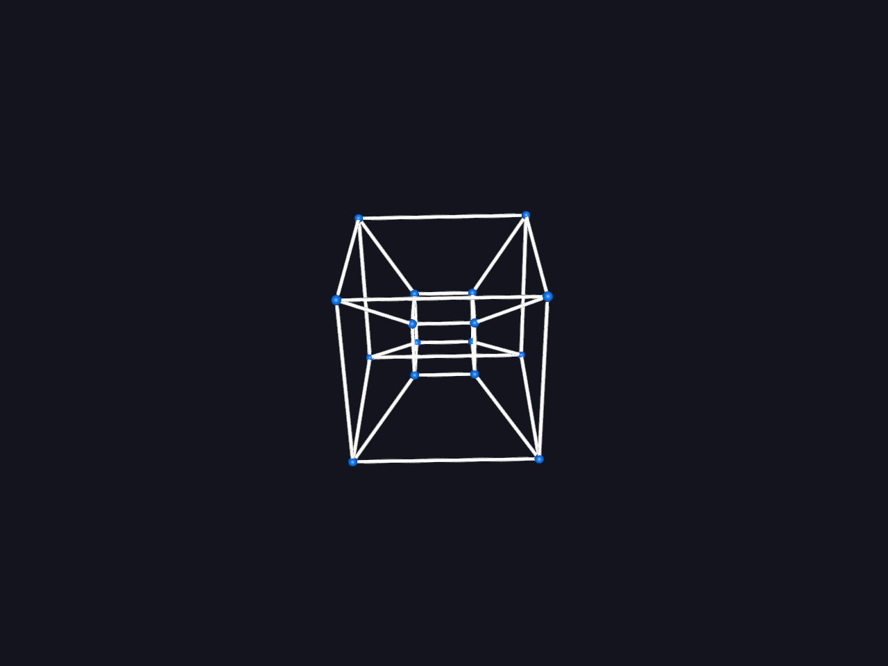

Note
Go to the end to download the full example code.
Tesseract (Hypercube) 4D Rotation#
A tesseract is a four-dimensional cube. Just as a 3D cube can be unfolded into six squares, a 4D tesseract can be unfolded into eight cubes.
This animation rotates the tesseract in both the 2D XY-plane and the 4D ZW-plane before projecting the 4D coordinates down into 3D space.
Import the required libraries.
import numpy as np
from fury import actor, ui, window
Let’s define some variable and their description:
- wireframe: bool
Flag to control whether vertex point markers are rendered alongside edge paths.
- p_color: numpy.ndarray
RGBA color vector defined for the vertex point sphere markers.
- e_color: numpy.ndarray
RGBA color vector defined for the edge connecting hypercube trace lines.
- dtheta: float
The continuous angular step progression variable added per playback loop.
wireframe = False
p_color = np.array([0.0, 0.5, 1.0, 1.0], dtype=np.float32)
e_color = np.array([1.0, 1.0, 1.0, 1.0], dtype=np.float32)
dtheta = 0.02
state = {"angle": 0.0, "points_actor": None, "line_actor": None}
Generate the initial 3D vertex coordinates and extend them to 4D hypercube vertices.
verts3D_init = np.array(
[
[1.0, 1.0, 1.0],
[1.0, -1.0, 1.0],
[-1.0, -1.0, 1.0],
[-1.0, 1.0, 1.0],
[-1.0, 1.0, -1.0],
[1.0, 1.0, -1.0],
[1.0, -1.0, -1.0],
[-1.0, -1.0, -1.0],
],
dtype=np.float32,
)
# Project vertices along positive and negative W axis to construct the hypercube.
u = np.insert(verts3D_init, 3, 1.0, axis=1)
v = np.insert(verts3D_init, 3, -1.0, axis=1)
verts4D = np.append(u, v, axis=0).astype(np.float32)
Define the 16 vertices connectivity network to trace out the 4D hypercube edges.
edge_pairs = []
for i in range(15):
if i < 8:
edge_pairs.append((i, i + 8))
if i != 7:
edge_pairs.append((i, i + 1))
if i % 4 == 0:
edge_pairs.append((i, i + 3))
for i in range(3):
edge_pairs.append((i, i + 5))
edge_pairs.append((i + 8, i + 5 + 8))
Define the transformations to rotate and project coordinates from 4D down to 3D.
def rotate_and_project_4D(vertices_4d, theta):
"""Rotate vertices in XY and ZW planes and project from 4D space down to 3D."""
cos = np.cos(theta)
sin = np.sin(theta)
# Build the 4D rotation matrix for the XY plane.
R_xy = np.array(
[
[cos, -sin, 0.0, 0.0],
[sin, cos, 0.0, 0.0],
[0.0, 0.0, 1.0, 0.0],
[0.0, 0.0, 0.0, 1.0],
],
dtype=np.float32,
)
# Build the 4D rotation matrix for the ZW plane.
R_zw = np.array(
[
[1.0, 0.0, 0.0, 0.0],
[0.0, 1.0, 0.0, 0.0],
[0.0, 0.0, cos, -sin],
[0.0, 0.0, sin, cos],
],
dtype=np.float32,
)
# Apply matrix transformation and perspective divide projected depth vector.
R_combined = R_zw @ R_xy
rotated = vertices_4d @ R_combined.T
distance = 2.0
w = 1.0 / (distance - rotated[:, 3])
projected = rotated[:, :3] * w[:, np.newaxis]
return projected.astype(np.float32)
Initialize the 3D scene viewport and configure the background properties.
scene = window.Scene()
scene.background = (0.08, 0.08, 0.12)
Add a 2D text overlay to display the legend and active rotation planes.
hud_legend = ui.TextBlock2D(
text="Fury 4D Tesseract (Hypercube)\n"
"Rotating simultaneously in 2D (XY plane) and 4D (ZW plane)",
position=(30, 30),
font_size=15,
color=(0.95, 0.95, 1.0),
bold=True,
dynamic_bbox=True,
)
scene.add(hud_legend)
Initialize the ShowManager, position the camera, and register the update callback.
show_m = window.ShowManager(
scene=scene, size=(1024, 768), title="Fury 4D Tesseract Rotation"
)
camera = show_m.screens[0].camera
camera.local.position = (0.0, 5.0, 8.0)
camera.look_at((0.0, 0.0, 0.0))
def update_tesseract_motion():
"""Update rotating coordinates and rebuild the actor geometries."""
state["angle"] += dtheta
verts3D = rotate_and_project_4D(verts4D, state["angle"])
# Update sphere point coordinates to reflect active transformations.
if not wireframe:
if state["points_actor"] is not None:
scene.remove(state["points_actor"])
state["points_actor"] = actor.sphere(
centers=verts3D,
radii=np.array([0.05] * 16, dtype=np.float32),
colors=np.tile(p_color, (16, 1)),
)
scene.add(state["points_actor"])
# Update continuous hypercube lines mapping to reflect point movements.
if state["line_actor"] is not None:
scene.remove(state["line_actor"])
lines_data = [verts3D[list(pair)] for pair in edge_pairs]
state["line_actor"] = actor.line(lines_data, colors=e_color, material="basic")
state["line_actor"].local.position = (0.0, 0.0, 0.0)
scene.add(state["line_actor"])
Run every 20 milliseconds
show_m.register_callback(update_tesseract_motion, 0.02, True, "TesseractRotationLoop")
show_m.start()

Total running time of the script: (0 minutes 29.000 seconds)